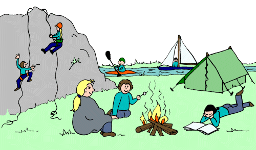

ここ数十年の間に、多くの国で1日か2日の週末がある。週末は日常の仕事から離れて充電する重要な時間である。また、物事をより深く考える良い機会でもある。
プログラマー（開発者またはソフトウェアエンジニア）は、他の人と比べて非常に特殊な職業である。コンピューターを使う必要のある仕事がたくさんあるにもかかわらず。
インスピレーションは、ジャクリーン・スミスが書いた「成功者が週末にする14のこと」から来ている。ここでは、プログラマーが週末にできる有益なことをまとめた。
もしあなたがプログラマーなら、週末の計画についてあなたの考えを聞かせてほしい。
1. 家族や友人に時間を使う。

平日、技術分野のプログラマーはたいていとても忙しいので、週末の時間は家族や友人のために使おう。これは他の分野の人にも当てはまることだ。
2. コンピューターのない1日（ノーコンピューター・デー）

テクノロジーなしを試みた人もいる。つまり、日中は一切テクノロジーを使わないということだ。コンピューターから完全に離れるのは現実的ではないかもしれないが、少なくともいくつかは避けられる。コンピューターに触れないということは、基本的にコンピューター関連の仕事（コードを書くなど）がないことを意味する。
3. アウトドア活動：旅行に出かける、サイクリング、ランニング、釣り、ボート漕ぎ。

週末の時間を利用して運動しよう。今は公園がどこにでもあるので、運動をして体を鍛えるべきだ。
4. 家で家事をする
週末の時間を利用して、家で家族と一緒に料理をしたり、一緒に草花の世話をしたりしよう。
5. 読書

研究によると、読書は脳にとても良い。読書は、あなたを思いやりがあり、魅力的で、教養のある人にし、周りの人にも良い影響を与える。
さらに、心の健康を保ち、思考を機敏にすることもできる。
静かな環境を見つけることは重要だ。学校や公共図書館に行って読書をするとよい。
6. 日記/ブログを書く。
書くことは思考を整理し、考えをより明確にするのに役立つ。
7. マインドマップを描いて、難しいことを簡単にする。
もし書くことが古いやり方なら、図表を描いてみるのもいいだろう。紙に描くこともできる。また、lucidchart、infographics、MindMeister、Sea Quail DatabaseDiagramツールなど、美しい図を作成できる優れたオンラインツールもたくさんある。
8. 人間関係

人間関係はとても重要だ！人脈を築こう！これはビジネスパーソンだけでなく、プログラマーも身につけるべき能力だ！
原文アドレス：http://www.programcreek.com/2012/10/8-things-programmers-can-do-at-weekends/
翻訳はIT江湖によるものです！